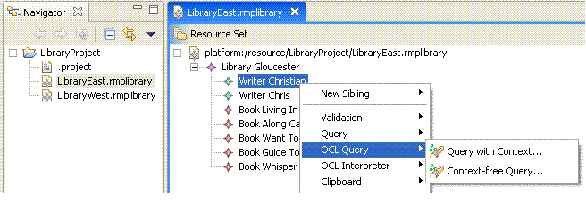

This example describes the usage of OCL extensions to the query framework within the SDK. It demonstrates how to author basic OCL-based conditions used to formulate OCL queries over the library models.
Please refer to the document EMF Model Query Examples Overview for reviewing the library meta-model used as the basis for demonstrating the capabilities in this example.
This example plug-in is named org.eclipse.emf.query.examples.ocl.
This plug-in contributes the OCL Query menu to the library
editor's main menu and context menu. The menu has two query wizards:
EClass and enter a boolean OCL condition (an example is provided)Please refer to the tutorial OCL Query Tutorial for reviewing the code samples within this example.
Refer to this example if you need:
Copyright (c) 2000,2005 IBM Corporation and others. All Rights Reserved.